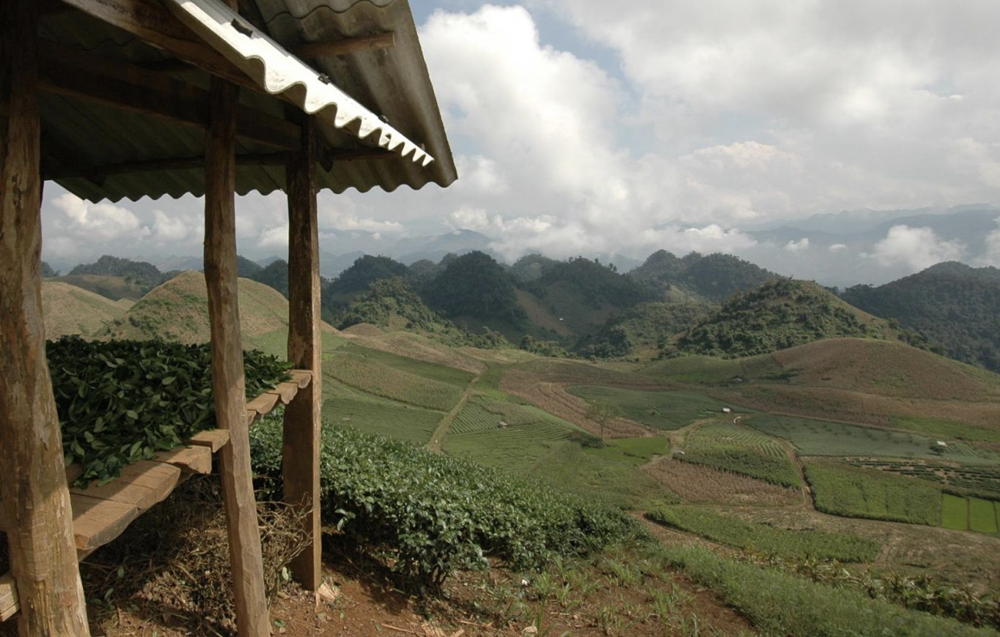
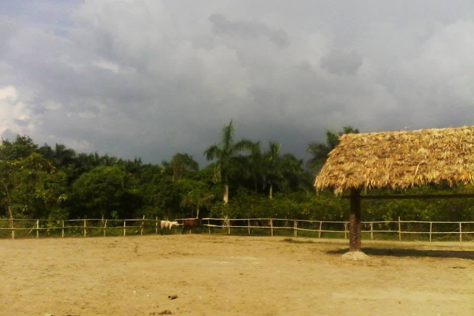
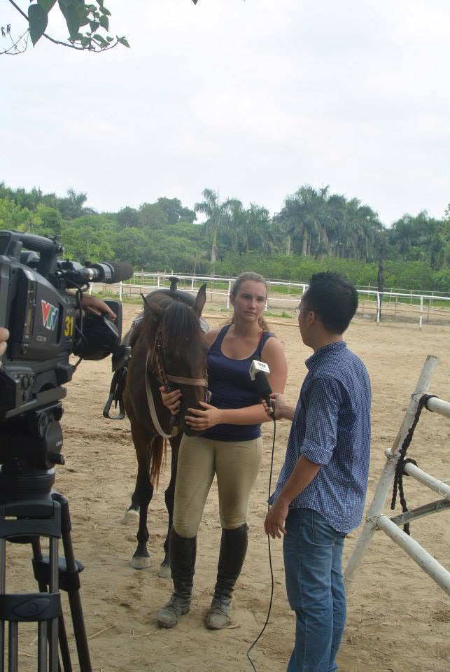
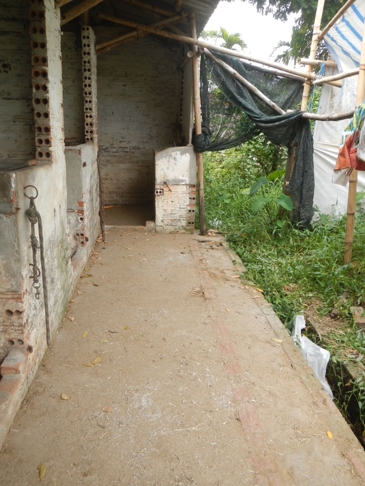

Case study
Riding School in Vietnam
At 19 I was contracted to set up the first riding school in Hanoi, and to make sure it was financially sustainable and scalable.
- Location
- Hanoi, Vietnam
- Year
- 2014
- Role
- Set-up and staff training
- Status
- Still running
- 3months to get it set up and running
- 1striding school of its kind in Hanoi
- 19my age when I took it on
- Todaystill running, by the staff I trained
Moc Chau, northern Vietnam. Photo by Sara.

01 The brief
At the age of 19 I took on the challenge because what else would you want to be doing at that age? I had worked in the industry for a few years now and around the world (from Belgium, USA, to Australia) and was ready to put my skills and knowledge to the test. The brief was simple, set up the first riding school in Hanoi, Vietnam. Remember, at this point in time (2014) Google Translate or things like that were not readily available... only a small oversight on my part that I couldn’t speak Vietnamese (my limited Chinese would not get me very far here!).
02 What I walked into
I had a 3 month time-frame to get it set up and running, my client wanted to have clients walking through the door yesterday, there were horses that had never been sat on before, others had foals at foot, some had old injuries that inhibited their ability to be sound, and finally there were some that had only ever had monkeys sat on them (yes, for real! They were bought from the circus)!
When I first stepped off the plane, I wanted to get straight back on it! I was no longer somewhere where everything was organised, thought out and deliberate, or even with any resemblance of calm. The best way to describe it is that it felt like there were fires everywhere. I needed to consider the wish list of my client, what I had in front of me, and what I needed to build to ensure I was hitting the brief of [financially] sustainable and scale-able.
“…some that had only ever had monkeys sat on them.”


03 What I did
It is therefore safe to say, that the business plan that I had prepared along with how the next 3 months would go went in the bin. I learned a lot about resilience, adaptability, humility, and compassion.
It is one thing needing staff (who don’t speak my language, nor me theirs) to learn how to perform the horse care tasks, it’s another thing trying to show them ‘why’ it is so important. There were moments of frustration (from either side!) but also moments where it suddenly clicked and made sense, building that positive environment for both staff and animals is key. What an experience!
04 The outcome
Still going today, and still the first of its kind in Hanoi. It was built to be financially sustainable and scalable, and run by the staff I trained to take over.
- Resilience
- Adaptability
- Humility
- Compassion
“Sara is brilliant, watching her train staff to take over from her once the riding school had been set up was a breath of fresh air.”
Your turn
Fires everywhere? That’s where I start.
What’s burning? Pick the closest.
Something to set up from scratch, a team that needs to learn the why, or a plan that has already gone in the bin. Tell me about it and I’ll bring the calm.